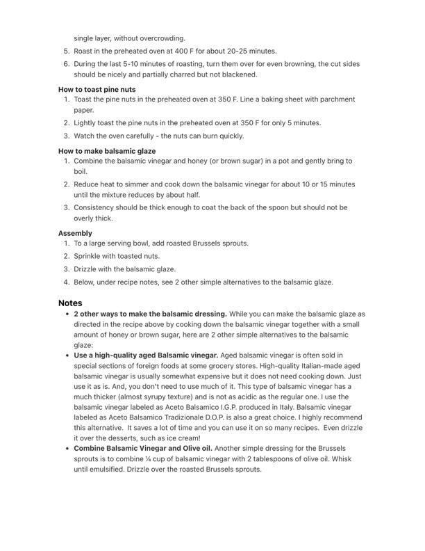

single layer, without overcrowding.

Original cookbook page 715
Ingredients
- 1 large mixing bowl
- 1 set measuring spoons
- 1 whisk with handles
- 2 baking sheets
- Parchment paper
Instructions
- Combine the balsamic vinegar and honey (or brown sugar) in a pot and g boil.
- Reduce heat to simmer and cook down the balsamic vinegar for about 10 until the mixture reduces by about half.
- Consistency should be thick enough to coat the back of the spoon but st overly thick. Assembly
- Sprinkle with toasted nuts.
- Drizzle with the balsamic glaze. . Below, under recipe notes, see 2 other simple alternatives to the balsami Notes 2 other ways to make the balsamic dressing. While you can make the I directed in the recipe above by cooking down the balsamic vinegar toget amount of honey or brown sugar, here are 2 other simple alternatives to t glaze: « Use a high-quality aged Balsamic vinegar. Aged balsamic vinegar is of special sections of foreign foods at some grocery stores. High-quality Ita balsamic vinegar is usually somewhat expensive but it does not need coc use it as is. And, you don't need to use much of it. This type of balsamic I much thicker (almost syrupy texture) and is not as acidic as the regular o balsamic vinegar labeled as Aceto Balsamico I.G.P. produced in Italy. Bals labeled as Aceto Balsamico Tradizionale D.O.P. is also a great choice. I hit this alternative. It saves a lot of time and you can use it on so many recip it over the desserts, such as ice cream! Combine Balsamic Vinegar and Olive oil. Another simple dressing for t! sprouts is to combine % cup of balsamic vinegar with 2 tablespoons of ol until emulsified. Drizzle over the roasted Brussels sprouts.
Recipe #715 from collection